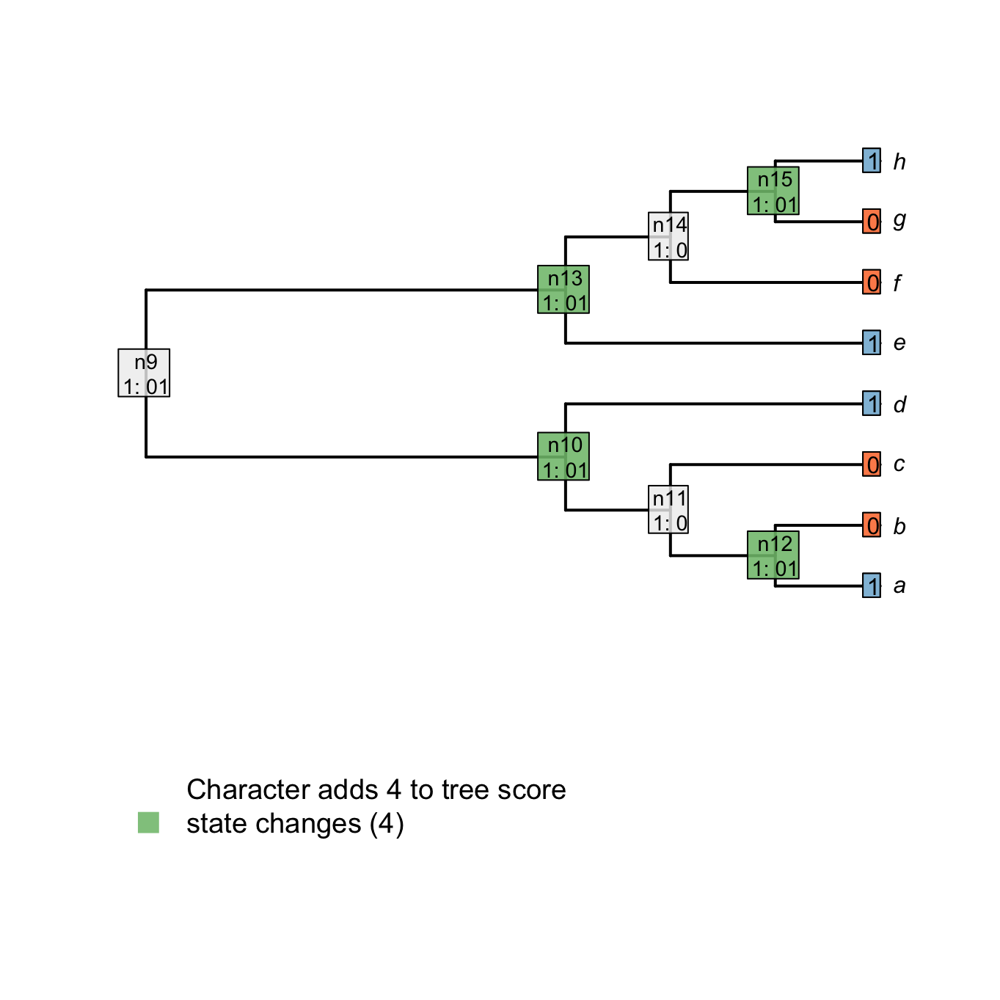
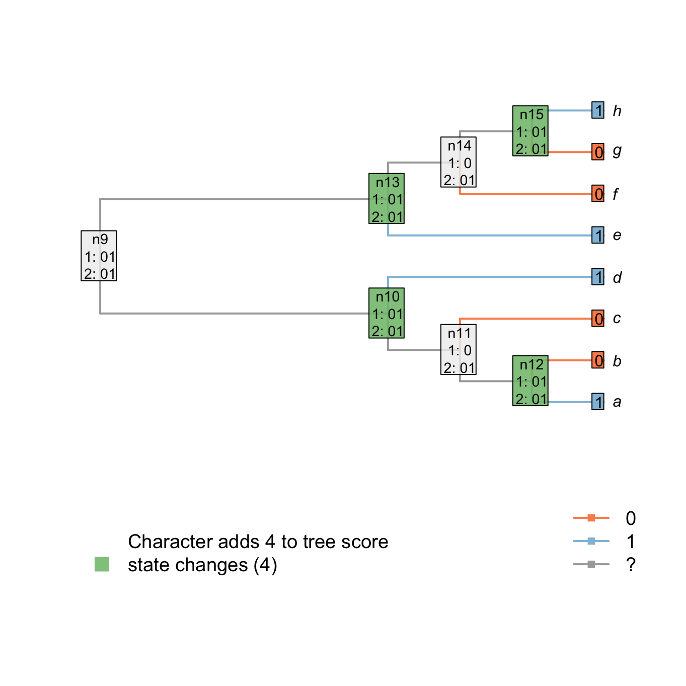
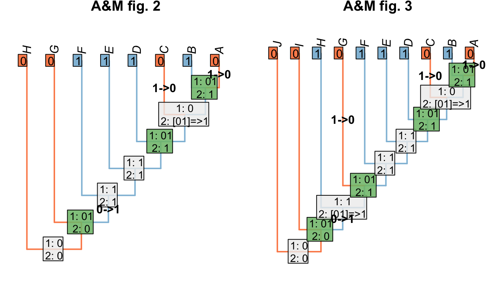

2 The Fitch algorithm
This algorithm was proposed by Fitch (1971) and is implemented in many phylogenetic softwares based on maximum parsimony (Swofford, 2001,Goloboff & Catalano (2016)) or probabilistic methods (Ronquist et al., 2012,Stamatakis (2014)). The procedure is rather simple and elegant and consist in going down the tree to count the number of transformation and then go up the tree again to finalise the ancestral states reconstructions.
The way the algorithms goes up and down depends on the software but often uses a traversal: a recursive function that can visit all tips and nodes in a logical fashion. For example, consider the following tree:

A downpass traversal will first apply the algorithm to the first cherry (or pair of taxa) (A below), then save the results in n1 and move to the second pair of tips/nodes (B), apply the algorithm and save the results in n2, etc. until all the nodes/tips are visited.

An uppass traversal works identically but in the other way, going from the nodes to towards the tips.

In both traversals, the direction (i.e. which cherry to pick first in a downpass traversal or whether to continue left or right in an uppass traversal) can be arbitrary as long as all tips and nodes are always visited.
Now let’s consider a more complex tree ((((a, b), c), d), (e, (f, (g, h)))); with a binary character distributed for the tips 10011001 respectively to the tips alphabetical order.
We can use the Inapp package to apply the Fitch algorithm for this character on this tree.
## Loading the Inapp package
library(Inapp)
## The tree
tree <- read.tree(text = "((((a, b), c), d), (e, (f, (g, h))));")
## The character
character <- "10011001"
## Applying the Fitch algorithm
matrix <- apply.reconstruction(tree, character, method = "Fitch", passes = 2)2.1 Downpass
The downpass is quite simple and follows the following rules for the two possible cases in the traversal:
- If the two considered tips or nodes have at least one state in common, set the node to be these states in common.
- Else, if there is nothing in common between the to tips or nodes, set the node to be the union of the two states.
For example, node n15 is case 2 because there is nothing in common between the tips h and g (respectively states 1 and 0). Node n14 is case 1 because there is at least one state in common between the tip f and the node n15 (state 0).
Important: when the case 2 is encountered, a transformation is implied in the descendants of the considered node. The score of the tree is incremented by +1.
In the following example, nodes that are in case one are in light orange and nodes that imply a transformation (i.e. that add to the tree score) are in blue.
## Plotting the first downpass
plot.states.matrix(matrix, passes = 1, counts = 2, show.labels = c(1,2))
2.2 Uppass
The downpass is sufficient for calculating the score of the tree, but some nodes might node yet be properly resolved. For example, it seems clear that the sate of node n14 could not be 0 since both its ancestor and one of its descendants has an ambiguous state of 01. It would less parsimonious for this node to be also ambiguous (rather than implying the loss and the subsequent gain of the state 1 on the branch fron n13 to h).
Similarly to the downpass, it is possible to run a traversal with the following rules:
- If the current node and its ancestor have all states in common, the node is resolved.
- If there is at least one state in common between both left and right tips or nodes directly descending from the current node, resolve the node as being the states in common between its ancestor and both his descendants.
- If there is there are no states in common between its descendants, resolve the node as being the states in common between the ancestor and the current node.
For example, node n13 is already resolved (it has all its states in common with the ancestor - case 1). Node n14 has not all its states in common with its ancestor but its two descendants (n15 and f) have at least one state in common (0). This node is thus solved to be the states in common between both descendants (01) and its ancestor (01 as well).
## Plotting the first downpass
plot.states.matrix(matrix, passes = c(1,2), counts = 2, show.labels = c(1,2))
More complex cases can be studied in the Inapp App (running in your favourite web browser) by switching the Reconstruction method to Normal Fitch.
## Running the Inapp App
runInapp()2.3 Discussion: How to optimise characters
- Acctran vs Deltran: Neither is guaranteed to always maximise homology
- With transformational characters, there’s no way to decide.
- With neomorphic characters though, we want to assume the minimum number of innovations of the innovation.
- This is what we mean by maximising homology: always assume a neomorphic character is present if you can
- Here’s how we’d resolve the ambiguous trees from (Agnarsson & Miller, 2008).
2.4 Problems with the Fitch algorithm
The Fitch algorithm counts changes in a character. It assumes that the character is applicable throughout the tree. This assumption does not lead to error if: - The character is inapplicable in fewer than three tips; or - In the trees being considered, applicable and inapplicable tokens occur in distinct regions of the tree (Maddison, 1993).
2.4.1 Red tails, blue tails
Maddison (1993) provided the following example to demonstrate the problem encountered by the Fitch algorithm when inapplicable characters were present.
Consider the following tree, each node of which is supported by a number of characters. Tail colour (illustrated; 0 = red, 1 = blue) has not yet been considered, but has the potential to resolve the polytomy on the left hand side (bold).

Tail colour should group the red-tailed tips together, and the blue-tailed tips together, but does not establish whether the ancestor of the left-hand tail-bearing clade had a red or blue tail.
2.4.2 Why Reductive coding doesn’t work
Using reductive coding, our character looks like:
Tail: (0), absent; (1), present.
Tail colour: (0), red; (1), blue; (?), inapplicable.
Consider the following two trees, each of which receives a score of two for the first character, Tail: absent/present. The score of the second character, for tail colour, is not as desired.
The Fitch algorithm will prefer trees in which the left-hand tail-bearing clade has a blue tail, simply because the right-hand tail-bearing clade ancestrally did.

Notice the additional step reconstructed at the root node: the Fitch algorithm reconstructs a change in tail colour in a taxon that doesn’t have a tail!
This reconstruction is not logically consistent.
2.4.3 Why Extra State doesn’t work
An alternative is to code the inapplicable token as an extra state:
Tail: (0), absent; (1), present.
Tail colour: (0), red; (1), blue; (2), inapplicable.
This seems to resolve the problem case that we encountered with reductive coding:

Both trees now receive the same score for the ‘tail colour’ character, which contributes four steps. Two of these steps, however, correspond to steps that have already been counted in the parent character, reflecting the two gains of a tail.
Although this reconstruction is now logically consistent, the gain (or loss) of the tail is now reflected in two characters – characters are not independent of one another.
The outcome is that each ontologically dependent character serves to increase the weight of its parent character. The loss of a tail, for example, would incur a cost of one step in the tail character and one step in each ontologically dependent character, even though it represents a single evolutionary event.
2.4.4 Why a single multi-state character doesn’t work
A different approach is to use a single character to denote both the presence and the colour of the tail:
Tail: (0), absent; (1), present, red; (2), present, blue.
This seems to resolve the problem case that we encountered with reductive coding:

However, we now have a situation where the gain/loss of a tail is afforded the same weight as a change in tail colour. We ought to prefer a tree where the tail evolved once (and changed colour) to one where it evolved twice (being a different colour each time).

2.4.5 Sankoff matrices
It would be possible to establish a Sankoff matrix such that a change between absent and red or absent and blue cost more than a change between red and blue, but this effectively up-weights the tail character, and it’s not clear that this is desirable – or how much this extra weight should be (Maddison, 1993).
2.4.5.1 Symmetric
Consider a character with three ontologically dependent characters:
Tail: Absent / present
Tail colour: Red / blue
Tail covering: Scaly / hairy
Tail shape: Straight / curly
This could be coded as a single transformation series using a Sankoff matrix:
| 0 | 1 | 2 | 3 | . | . | . | 8 | |
|---|---|---|---|---|---|---|---|---|
| (0), absent | 0 | 4 | 4 | 4 | . | . | . | 4 |
| (1), present, red, scaly, straight | 4 | 0 | 1 | 1 | . | . | . | 3 |
| (2), present, red, scaly, curly | 4 | 1 | 0 | 2 | . | . | . | 2 |
| (3), present, red, hairy, straight | 4 | 1 | 2 | 0 | . | . | . | 2 |
| . | . | . | . | . | 0 | . | . | . |
| . | . | . | . | . | . | 0 | . | . |
| . | . | . | . | . | . | . | 0 | . |
| (8), present, blue, hairy, curly | 4 | 3 | 2 | 2 | . | . | . | 0 |
The first thing to note is that each additional ontologically depedent character generates disproportionately more complexity in the Sankoff matrix.
Even if this additional complexity could be handled, the underlying issue remains that losing a tail, which arguably corresponds to a single evolutionary event, is allocated a large cost that only grows with the number of ontogenetically dependant characters.
2.4.5.2 Gain and loss asymmetric
At the cost of symmetry, one could argue that the loss of a tail requires a single transformation, whereas the gain requires the addition of a tail and the “setting” of each ontologically dependent character, rendering an asymmetric Sankoff matrix that nevertheless respects triangular inequality:
| 0 | 1 | 2 | 3 | . | . | . | 8 | |
|---|---|---|---|---|---|---|---|---|
| (0), absent | 0 | 4 | 4 | 4 | . | . | . | 4 |
| (1), present, red, scaly, straight | 1 | 0 | 1 | 1 | . | . | . | 3 |
| (2), present, red, scaly, curly | 1 | 1 | 0 | 2 | . | . | . | 2 |
| (3), present, red, hairy, straight | 1 | 1 | 2 | 0 | . | . | . | 2 |
| . | . | . | . | . | 0 | . | . | . |
| . | . | . | . | . | . | 0 | . | . |
| . | . | . | . | . | . | . | 0 | . |
| (8), present, blue, hairy, curly | 1 | 3 | 2 | 2 | . | . | . | 0 |
Here, though, we encounter a new problem: reconstructions involving very many losses are preferred to those involving a single gain.
2.5 Conclusion
No coding mechanism can generate consistent and logically meaningful tree scores when employing the Fitch algorithm. The inapplicable state needs treating differently from other states. A new algorithm is needed.
2.6 Counting steps is doomed
Plenty of people informally have attempted to solve the problem by counting steps. (E.g. that U of Texas PhD that we found; goloboff pers. comm.?)
It’ll never work. here’s why.
One example: multiple independent gains are preferred because they avoid adding steps.
References
Fitch, W. M. (1971). Toward defining the course of evolution: minimum change for a specific tree topology. Systematic Biology, 20(4), 406–416. doi:10.1093/sysbio/20.4.406
Swofford, D. L. (2001). Paup*: Phylogenetic analysis using parsimony (and other methods) 4.0. b5.
Goloboff, P. A., & Catalano, S. A. (2016). TNT version 1.5, including a full implementation of phylogenetic morphometrics. Cladistics, 32(3), 221–238.
Ronquist, F., Teslenko, M., Mark, P. van der, Ayres, D. L., Darling, A., Hohna, S., … Huelsenbeck, J. P. (2012). MrBayes 3.2: Efficient Bayesian phylogenetic inference and model choice across a large model space. Systematic Biology, 61(3), 539–42.
Stamatakis, A. (2014). RAxML version 8: A tool for phylogenetic analysis and post-analysis of large phylogenies. Bioinformatics, 30(9), 1312–1313. doi:10.1093/bioinformatics/btu033
Agnarsson, I., & Miller, J. A. (2008). Is ACCTRAN better than DELTRAN? Cladistics, 24(6), 1032–1038. doi:10.1111/j.1096-0031.2008.00229.x
Maddison, W. P. (1993). Missing data versus missing characters in phylogenetic analysis. Systematic Biology, 42(4), 576–581. doi:10.1093/sysbio/42.4.576